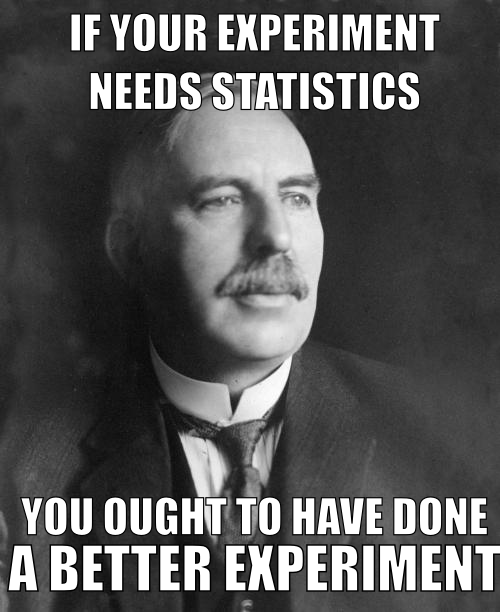

Automotive application: stronger, lighter steels
- Goal: relate stress and strain at same point on material
- Problem: measurements are incompatible!
- Solution: measure surroundings; infer in the gap
Charles Hogg
Google, Inc.
Automotive application: stronger, lighter steels


Gaussian process machinery:


